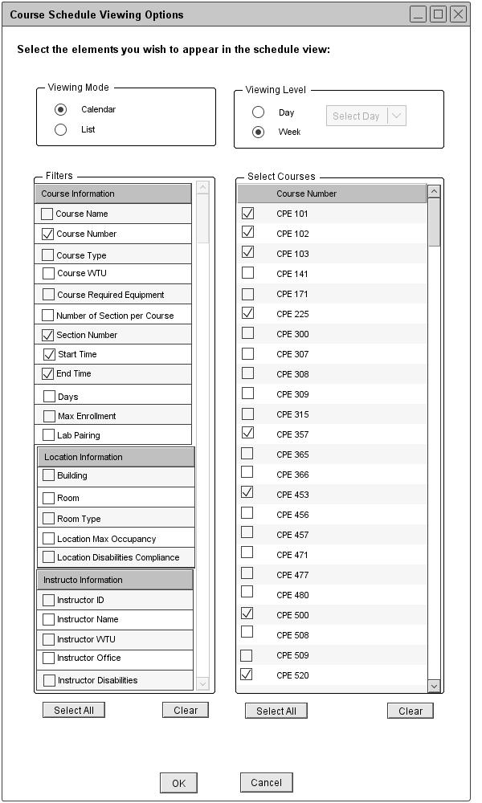
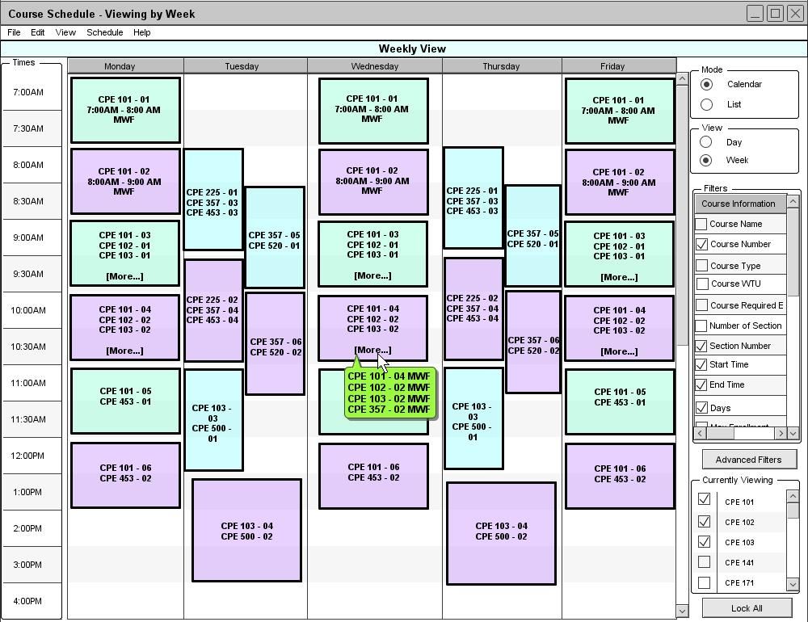
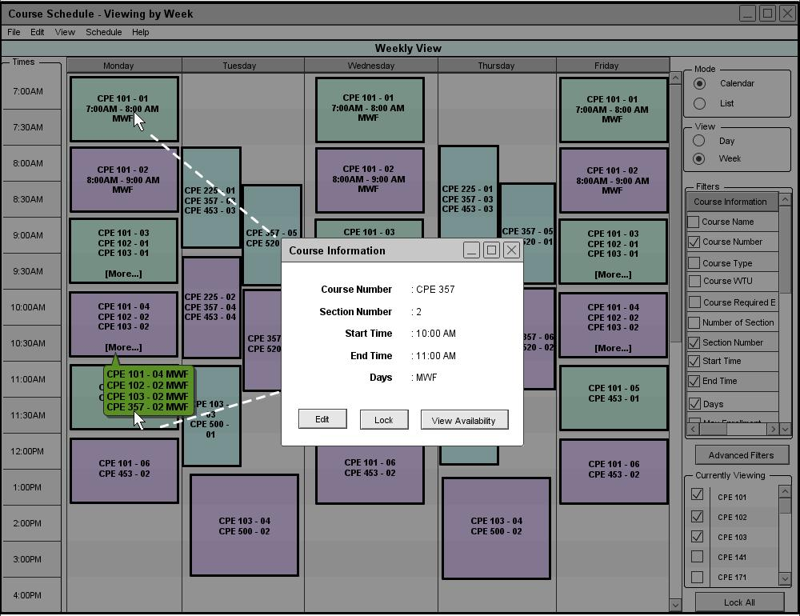

Figure 49a is a filled in version of figure 66.

Figure 74: Viewing a course schedule in the calendar mode
From the user's selections in figure 74, the Schedule Tool displays a weekly course schedule view in the calendar mode as shown in figure 75.

Figure 75: Calendar Mode of Weekly Course Schedule
The Course Number, Section Number, Start Time, End Time, and Days filter options are automatically selected and displayed on the schedule. By default, the program displays a weekly schedule from Monday through Friday. If the user wants to modify the day setting, the user can click on the Advanced Filters button on the right column of the view window. When viewing a weekly course schedule in the list mode, the data is sorted by days, course number, and then section number by default.
Each box on the calendar view can fit up to 3 lists of classes. When there are more than 3 classes offering, the bottom of the box displays More... link which pops up a small popup window displaying all the courses that are offerring during that time. Under the course schedule view, the popup displays the course number, section number, and days information. When there is only one class offerring during a specific time, the cell shows all of the information.
A popup window only displays certain information. The displayed information is vary, depending on the view mode and the view level. Table 2 explains what information is displayed for each view mode and view level.
| Daily | Weekly | |
| Course View |
|
|
| Location View |
|
|
| Instructor View |
|
|
Table 2: Popup Window Filters
A popup window doesn't show full information of each schedule item. It does not display other information fields, beside those fields in table 2. For example, even if the user selects to view Course Type information, the Scheduler Tool does not display course name information on the popup window.
Users can view the full description of each course by clicking on the course number on each cell on the calendar view or clicking the course number on the popup window. By doing so, the Scheduler Tool displays a dialog window as shown in figure 76.

Figure 76: A dialogue window with the full description